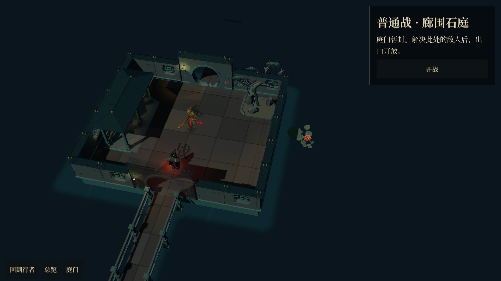
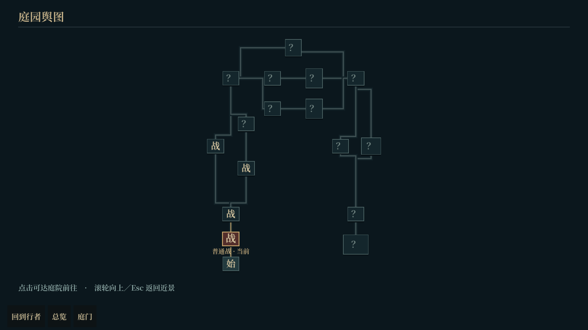

<!doctype html>
<html lang="zh-CN">
<meta charset="utf-8">
<meta name="viewport" content="width=device-width, initial-scale=1">
<title>地图优化 · 近景与舆图</title>
<style>
*{box-sizing:border-box}body{margin:0;padding:28px;background:#0a151b;color:#cbbd9f;font:16px/1.65 'Microsoft YaHei',sans-serif}header{display:flex;justify-content:space-between;align-items:end;border-bottom:1px solid #30464b;padding-bottom:22px;margin-bottom:20px}h1{margin:0 0 8px;font-weight:500;font-size:32px}header p{margin:0;color:#8ca5a3}header aside{color:#af9562;text-align:right}.grid{display:grid;grid-template-columns:1fr 1fr;gap:20px}figure{margin:0;background:#10232a;border:1px solid #2a4248}img{display:block;width:100%;aspect-ratio:16/9;object-fit:contain}figcaption{padding:15px 20px 19px}b{display:block;font-weight:500;font-size:23px;margin-bottom:4px}span{color:#8ea5a0;font-size:16px}footer{margin-top:22px;display:flex;gap:25px;flex-wrap:wrap;color:#91a5a2}a{color:#c5a96f;text-decoration:none}a:hover{text-decoration:underline}.note{width:100%;margin:0;font-size:15px}@media(max-width:1100px){.grid{grid-template-columns:1fr}header{display:block}header aside{text-align:left;margin-top:15px}}
</style>
<header><div><h1>地图优化 · 近景与舆图</h1><p>紧凑院落间距 · 随窗口取景 · 清晰总览 · Godot 原生运行截图</p></div><aside>近景保留庭院模型与视差<br>舆图自动适应屏幕，点击庭院继续行走</aside></header>
<main class="grid">
<figure><a href="02-local-1920.png"></a><figcaption><b>近景 · 看清一间院落</b><span>按窗口比例取景，避开操作面板，缩放范围保持模型可读</span></figcaption></figure>
<figure><a href="04-atlas-1920.png"></a><figcaption><b>总览 · 看清路线关系</b><span>房间、分叉、汇合与封路单独绘制，完整路线随窗口适配</span></figcaption></figure>
</main>
<footer><a href="01-local-1280.png">1280×720 近景</a><a href="03-zoom-limit.png">缩放上限</a><a href="05-atlas-portrait.png">竖屏舆图</a><a href="06-local-portrait.png">竖屏近景与下方操作面板</a><a href="README.md">修改与验证记录</a><p class="note">编辑器内嵌运行：Game 页右上角将 Fixed Size 改为 Stretch to Fit。改完后停止并重新运行本分支。</p></footer>
</html>
